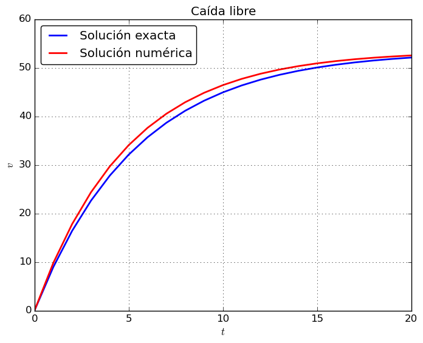

El modelo anterior se resolverá mediante el método de Euler $$ \begin{equation*} \frac{d v}{d t} \approx \frac{\Delta v}{\Delta t} = \frac{v(t_{i+1}) - v(t_{i})}{t_{i+1} - t_{i}} \end{equation*} $$
reemplazando en la ecuación diferencial $$ \begin{equation*} \frac{v(t_{i+1}) - v(t_{i})}{t_{i+1} - t_{i}} = g - \frac{c v(t_{i})}{m} \end{equation*} $$
despejando \( v(t_{i+1}) \) $$ \begin{equation*} v(t_{i+1}) = v(t_{i}) + (g - \frac{c}{m} v(t_{i})) (t_{i+1} - t_{i}) \end{equation*} $$
m = 68.1
c = 12.5
g = 9.81
ti = 0
vi = 0
println("t", '\t', "v")
println(ti, '\t', vi)
for i = 1:20
tf = ti + 1
vf = vi + ((g - ((c / m) * vi)) * (tf - ti))
println(tf, '\t', vf)
vi = vf
ti = tf
end
t v
0 0
1 9.81
2 17.819339207048458
3 24.358535387839858
4 29.697438583904496
5 34.05636689082364
6 37.615198225107115
7 40.52079326455148
8 42.89305588119034
9 44.82988115997332
10 46.41119519081522
11 47.702253342280855
12 48.75633312526895
13 49.61693277187891
14 50.31956625721685
15 50.89322883849129
16 51.361593589135325
17 51.74398830478596
18 52.05619309465638
19 52.31109157214236
20 52.51920251705015
Comparamos las soluciones:
using PyCall
using PyPlot
m = 68.1
c = 12.5
g = 9.81
ta = linspace(0,20,21)
va = zeros(21)
for i = 1:21
va[i] = ((g * m) / c) * (1 - exp(-ta[i] * (c/m)))
end
tn = zeros(21)
vn = zeros(21)
for i = 1:20
tn[i+1] = tn[i] + 1
vn[i+1] = vn[i] + ((g - ((c / m) * vn[i])) * (tn[i+1] - tn[i]))
end
plot(ta, va, color="blue", linewidth=2.0,label="Solución exacta")
plot(tn, vn, color="red", linewidth=2.0,label="Solución numérica")
xlabel(L"$t$")
ylabel(L"$v$")
legend(loc="upper left",fancybox="true")
title("Caída libre")
grid("on")
